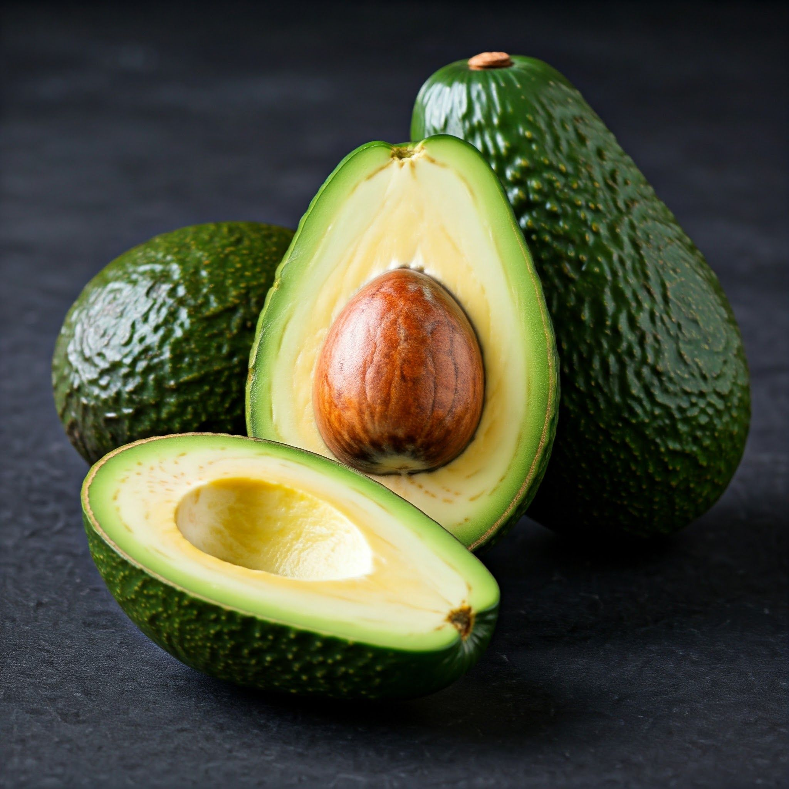

O que tem
no seu prato?
Pesquise um alimento e consulte valores de referência para 100 g da preparação indicada.
Encontre um alimento
COMPOSIÇÃO DE REFERÊNCIA
PORÇÃO 100 gAbacate, cru

ALIMENTO IN NATURAENERGIA96 kcalpor 100 g da parte comestível
Referência TACO, 4ª edição. Dados apresentados por 100 g; nutrientes não informados pela fonte não são interpretados como zero.
Consultar fonte de referênciaValores de referência variam conforme alimento e preparo. Esta consulta não substitui orientação profissional.